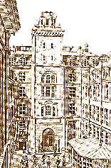
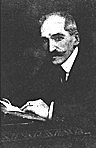
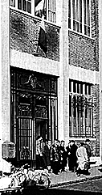

Un peu d'histoire...
Un peu d'histoire...
 En retraçant rapidement les différentes étapes de
l'histoire de l'Ecole on voit comment cette institution, en formant les
ingénieurs du Corps pour la nation puis les ingénieurs
civils pour l'industrie, a largement contribué au
rôle clé joué par les Télécommunications
françaises.
En retraçant rapidement les différentes étapes de
l'histoire de l'Ecole on voit comment cette institution, en formant les
ingénieurs du Corps pour la nation puis les ingénieurs
civils pour l'industrie, a largement contribué au
rôle clé joué par les Télécommunications
françaises.
1878 Création de l'Ecole Supérieure de
Télégraphie
ou l'émergence d'un nouveau métier:
ingénieur des Télégraphes
1888: L'Ecole Professionnelle des postes et
télégraphes
Edourd Estaunié, directeur de l'Ecole
La station de radiodiffusion à l'Ecole
La rue Barrault et l'Ecole Nationale Supérieure des
Télécommunications (ENST)
L'ENST aujourd'hui
1878 Création de l'Ecole Supérieure de
Télégraphie
ou l'émergence d'un nouveau métier:
ingénieur des Télégraphes

Avec l'invention du télégraphe électrique par Samuel
Morse en 1837 et la mise au point du téléphone par Alexander
Graham Bell aux aux Etats-Unis en 1876, les premiers besoins en formation
se font rapidement et cruellement sentir. Quand le lundi 4 novembre 1878,
s'ouvre l'Ecole supérieure de télégraphie,
ancêtre de l'ENST, le service des télégraphes
vient d'être uni à celui des postes au sein d'un sous
secrétariat des Finances. Louis Adolphe Cochery, le créateur
de l'Ecole, deviendra l'année suivante le premier ministre des
Postes et Télégraphes.

Les modalités
d'intégration à l'Ecole sont quasiment identiques à
celles en vigueur aujourd'hui . Il y a bien sûr les
élèves de l'Ecole Polytechnique, classés d'après
leur rang de sortie dans les télégraphes. Il existe
également un concours externe, ouvert aux licenciés
ès sciences, aux anciens de l'école Polytechnique, de
l'Ecole normale.... Mais l'Ecole est aussi destinée à offrir
des chances de promotion au personnel télégraphiste. Ils
doivent réussir un concours interne.
L.A. Cochery attend deux
effets de cette sélection. - Le premier est social : si l'origine
des candidats est variée leur avancement dans le service
après leur sortie a lieu dans des conditions identiques. Les
distinctions d'origine disparaissent définitivement.
- Le second
effet sera d'enrichir le corps des ingénieurs: "donner
à l'Etat, des fonctionnaires, non seulement au courant de la
science actuelle, mais prêts encore à en hâter les
progrès".
Le premier directeur de l'Ecole fut Edouard Blavier secondé par
Ernest Mercadier qui devait par la suite s'illustrer comme directeur des
études de l'Ecole Polytechnique. C'est lui qui y fit installer
l'électricité, nouvellement importée en Europe. C'est
pourquoi l'argot de l'X a désigné cette lumière par
le terme de "merca".
1888: L'Ecole Professionnelle des postes et
télégraphes
Dix ans après sa création, en 1888, l'Ecole subit sa
première transformation en devenant l'Ecole Supérieure des
Postes et Télégraphes. Elle comporte donc deux sections :
à la section des élèves-ingénieurs s'en
était ajoutée une d'élèves administrateurs.
Plus d'un demi-siècle avant la création de l'Ecole nationale
d'administration (ENA) on avait jugé que la gestion, elle aussi,
réclamait une formation supérieure et des techniques
propres.
Edouard Estaunié, directeur de l'Ecole
Parmi les directeurs de l'Ecole, on remarque Léon Thévenin
dont le nom reste associé au célèbre
théorème qu'il énonça et qui constitue, encore
de nos jours, un outil d'analyse des systèmes électriques
linéaires.

En 1901, Edouard Estaunié lui succéde. Célèbre
à plus d'un titre, il a largement marqué l'évolution
de l'Ecole. Ce polytechnicien, grand commis de l'Etat et romancier connu
inaugura des cycles de leçons faites par des conférenciers
extérieurs à l'administration ; Henri Poincaré et
Pierre Curie en firent partie.
Il introduisit également des cours
de cultures générale emmenant même les
élèves au Louvre le dimanche matin. Comme quoi la question
des humanités ne date pas d'hier ! E. Estaunié donna ainsi
à l'Ecole cet élan de haute université qu'elle n'a
cessé de présenter et de développer depuis lors.
C'est également lui qui, voulant faire la synthèse de
tous les "appareils" et de toutes les disciplines
enseignées sous sa responsabilité forgea le terme de
"télécommunication".
La station de radiodiffusion à l'Ecole
De1910 à 1924, l'Ecole fut animée par un autre grand
directeur, C Dennery. Il l'ouvrit encore davantage aux techniques
récentes et lui adjoignit un laboratoire de recherche le Service
d'études et de recherches techniques, qui devait être, par
la suite, à l'origine du Centre national d'études des
télécommunications. Et la recherche débouchait sur
les réalisations, comme le montre un fait remarquable : peu
après la mise en service, en 1921, de l'émetteur de radio
diffusion sur ondes longues installé à la tour Eiffeil,
Dennery créa en 1922, la première station européenne
de radiodiffusion sur ondes moyennes.
La rue Barrault et l'Ecole nationale supérieure des
télécommunications (ENST)
En 1934, l'Ecole est
séparée du Service d'études et de recherches
techniques. Elle quitte les locaux du Ministère, rue de Grenelle
pour s'installer au 36 de la rue Barrault.
Pour fêter le cinquantenaire de la création de l'Ecole,
le Président de la République, Albert Lebrun remet
solennellement à l'Ecole la Croix de la Légion d'Honneur,
le 17 mai 1938, pour les services essentiels rendus à la Nation.
Pendant la guerre, l'Ecole apporta sa contribution à la
Résistance, comme tant d'autres communautés de jeunes.
En1942, l'Ecole reçoit son appellation définitive d'Ecole
Nationale Supérieure des Télécommunications. D'aucuns
disent plus familièrement Sup'Télécom. A partir de
cette époque, le progrès des techniques de
télécommunications et l'apparition de la
télévision lui donnent une importance rapidement croissante.
A partir de 1943, l'Ecole recrute également des
élèves-ingénieurs civils, se destinant à
des carrières dans l'industrie privée.
Depuis, l'Ecole n'a cessé de se développer pour suivre
l'évolution spectaculaire des techniques de
télécommunication.
L'ENST aujourd'hui
Elle abrite aujourd'hui plus de 750
élèves, toutes promotions confondues et plus de 120
enseignants-chercheurs. L'Ecole essaime à Toulouse, à
Sophia Antipolis... Elle accueille des élèves du monde
entier. Elle constitue un pôle de tout premier plan pour
l'enseignement et la recherche dans le vaste domaine des sciences de
l'information et de la communication.
L'Ecole est placée sous la tutelle du Ministre chargé
des télécommunications, c'est lui qui signe les
diplômes. La réforme de 1990 a confié à France
Télécom, opérateur public de
télécommunications, une mission de service public
d'enseignement supérieur dans le domaine des
télécommunications. Dans ce cadre FRANCE TELECOM assure
75 % du financement de l'Ecole.
L'ENST fait aujourd'hui partie de la Direction de l'Enseignement
Supérieur de France Télécom qui regroupe les Ecoles
Nationales Supérieures des Télécommunications de
Paris et de Bretagne, l'Institut National des
Télécommunications à Evry ainsi que leurs filiales :
les Instituts Théséus et Eurécom à Sophia
Antipolis, l'Ecole nouvelle d'ingénieurs en communication de Lille
(ENIC), le Citcom et l'Ecole franco-polonaise de Poznan.


Page créée par Deborah LEWINER